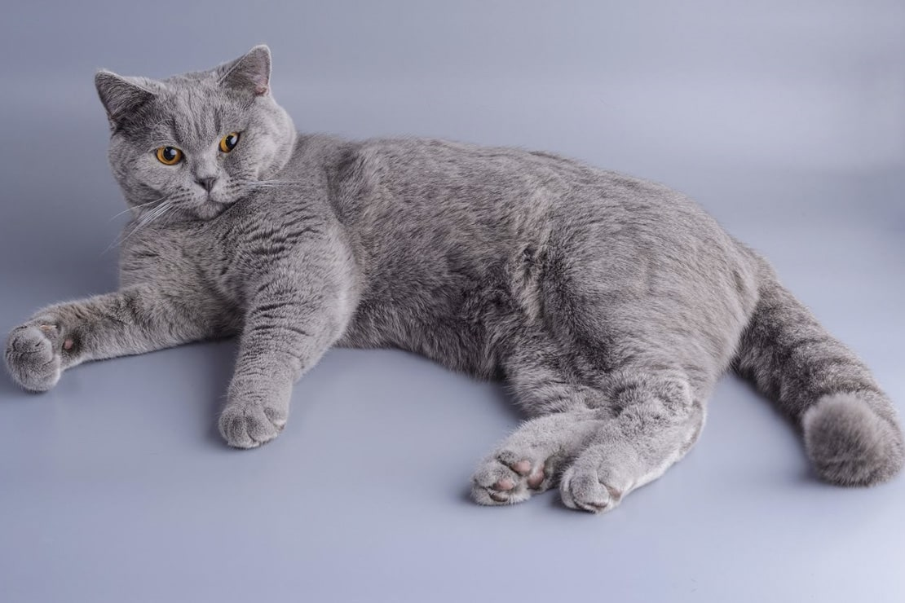
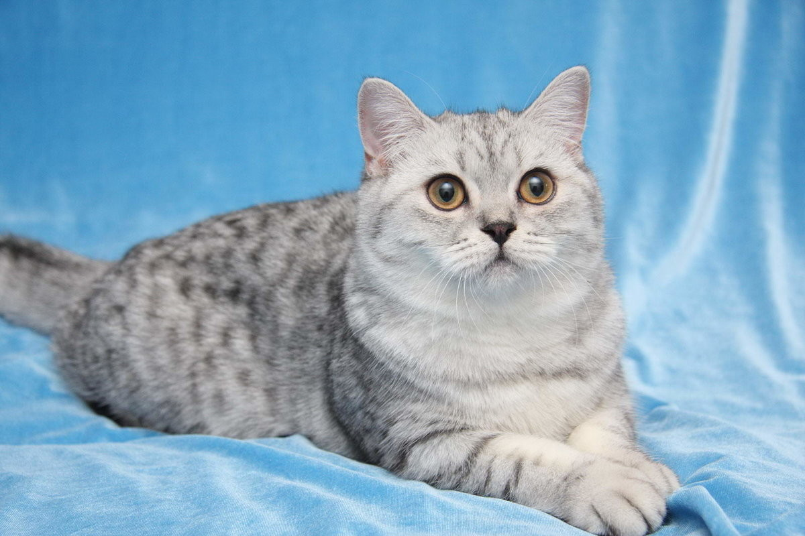
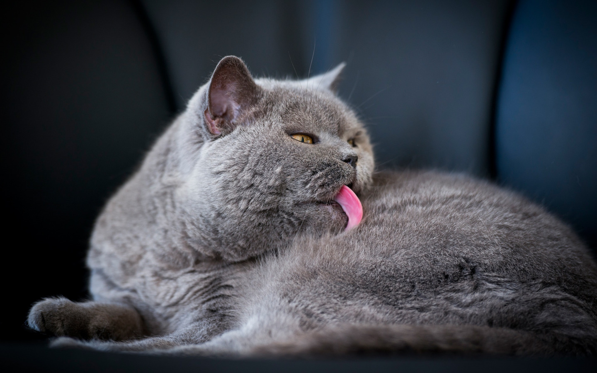
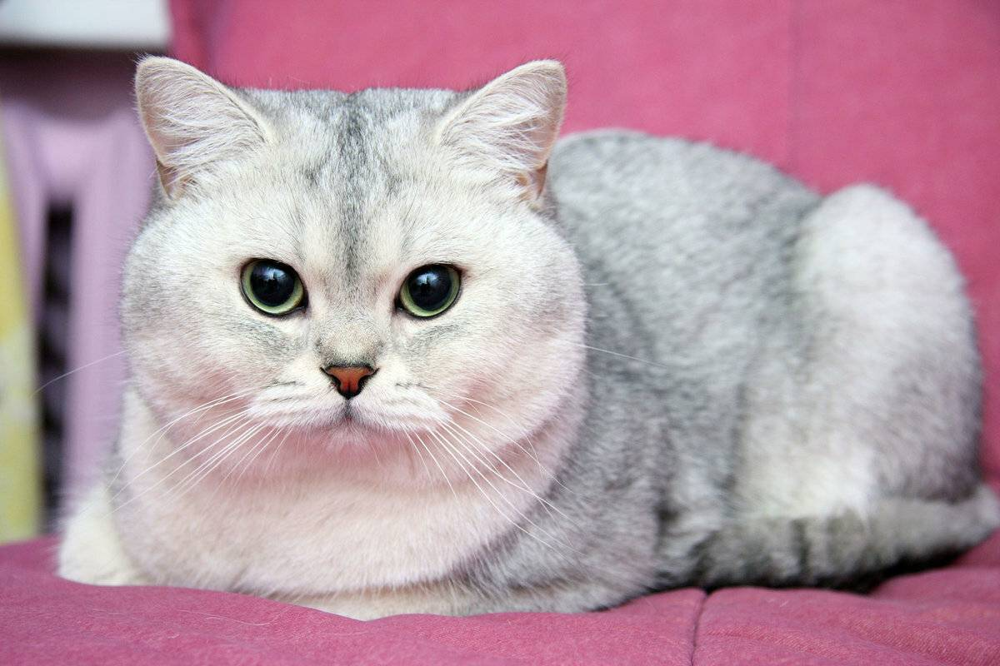

Время зарождения природы:первый был вывезен 1901 году но признали только в 1980 году
Годы жизни:в среднем состовляет 12-17 лет жизни

Описание породы
Шерсть-у британской кошки очень пушистая и мягкая, хоть и довольно короткая. Британским кошкам свойственно много различных окрасов, существует около 30 оттенков цветов их густой, роскошной шерсти, самые популярные — сплошные (серо-голубой, голубой, чёрный, лиловый, шоколадный), табби и серебристые табби, их разновидности: пятно, полоса и мрамор.
Голова—круглая и с хорошо развитыми щеками, широкая в скулах, которые подчеркивают её круглую форму. Шея — короткая, толстая. Нос — короткий, широкий, прямой. В профиль круглый лоб переходит в короткий, прямой нос (переход должен быть не очень явным, но заметным). Подбородок — сильный, ровный. Нос и подбородок составляют вертикаль.
Уши—маленькие, закруглённые, низко и широко посажены.
Глаза—большие, круглые, широко открытые, широко посаженные. Обычно яркого оранжевого цвета. Пойнтовые коты имеют голубые глаза. Шиншиллы — от голубого, лавандового до изумрудно зелёного.
Тело —приземистое, типа «кобби» (cobby), спина прямая, короткая. Грудь широкая. Плечи широкие, массивные
Хвост—толстый, средней длины, закруглённый на конце, широкий
Плюсы: Не требует много внимания, британские кошки флегматичны и самодостаточны, благодаря чему спокойно переносят одиночество, отлично подойдут для делового человека. Легко уживаются с другими домашними животными. Порода отличается своей сдержанностью, не проявляет агрессии
Минусы: Имеет собственное мнение по многим поводам — необходимо воспитывать с раннего детства.
История породы
Происхождение породы-Есть несколько версий, объясняющих происхождение британской породы кошек. По одной из них, история происхождения британской кошки связана с историей завоевания Британии Римом — якобы римляне привезли с собой египетских кошек, которые со временем приспособились к новому месту обитания, обзавелись густой шерстью с отличными защитными свойствами и, благодаря непревзойдённому охотничьему таланту, стали ценными домашними питомцами.
Британские коты в 19 веке- В XIX веке родился в Англии человек, благодаря которому британские кошки прославились на весь мир — история происхождения породы неразрывно связана с именем Харрисона Уэйра.Этот человек, талантливый художник и большой поклонник любых кошек, по сути, стал первым в мире фелинологом, составившим стандарты пород, пусть и весьма условные по сравнению с нынешними.
По его инициативе 13 июля 1871 года в столице Великобритании, в Хрустальном дворце, прошло сенсационное по тем временам событие — первая в истории кошачья выставка. В ней, кстати, участвовала и питомица Уэйра — короткошёрстная кошка окраса тэбби по кличке Старая Леди (Old Lady).
Ей к тому времени было уже 14 лет, что не помешало этой почтенной особе стать лучшей в своём окрасе, то есть первой британской кошкой-победительницей шоу.
Впрочем, становление любого дела с нуля — это очень долгий и трудоёмкий процесс, только спустя 18 лет после выставки кот-британец получил первую родословную — история породы в этот момент вышла на новый уровень.И благодаря этому человек Харрисон Уэйр сделал британскую кошку сделать популярной по всей Европе.
Британские кошки в России-В России первые британские кошки появились только в 1980 году, а популярность данная порода набрала лишь в 21 веке. Стандарт породы
Как британские кошки стали популярны на весь мир-За океаном британские кошки тоже прошли непростой путь — первый британец был вывезен в Америку еще в 1901 году, тем не менее самостоятельной британскую короткошёрстную породу ассоциация CFA признала лишь в 1980-м.
К счастью, сегодня все недоразумения уже позади — британская короткошёрстная порода признана всеми фелинологическими организациями. Питомников, где разводят британцев, наверное, тысячи по всему миру. Селекционеры работают над появлением всё новых и новых окрасов — сегодня британские кошки могут быть уже не только голубыми.
При всем этом они сохранили свои лучшие черты: узнаваемый облик солидных аристократов, отменное здоровье, великолепные охотничьи способности и спокойный выдержанный характер.

Характер кошки
Если в доме появляется ребенок или новое животное британец тяжело это переживает. Он ревнует, поэтому нуждается во внимании. Игнорирование со стороны хозяина приведет к тому, что питомец огорчится и начнет хандрить.
Приход гостей может вызвать у кошки недовольство, но она никогда этого не покажет и будет вести себя вежливо. Вначале обнюхает вещи чужака, понаблюдает за ним и только потом у нее появится доверительное отношение к гостю.
Также на поведение животного влияет эмоциональная обстановка в семье. Если в доме мир и покой кошка будет вести себя хорошо, но как только начнутся скандалы и ссоры, ее характер резко изменится. Она станет нервозной и будет всячески вредить членам семьи, выражая таким образом протест.
Это обидчивая и упрямая порода представителей кошачьих. Переделать манеры питомца или заставить его выполнять какие-нибудь действия невозможно. Он обидится, спрячется подальше от глаз, даже может укусить, нанеся рану хозяину.
 
Здоровье кошки
Здоровье британской кошки. Британцы – закаленные естественным отбором и селекцией кошки, в целом здоровые и выносливые. Продолжительность жизни у них высока: в среднем они живут 13-15 лет. По мнению ветеринаров, представители этой породы наименее предрасположены к онкологическим заболеваниям, у них почти не встречается мутаций генов и наследственных патологий. Британцы очень плохо переносят сквозняки и низкие температуры.
Интересные факты о британских кошках
Несмотря на то, что самый популярный окрас британских кошек — серо-голубой, представители этой породы также встречаются с почти 30 различными цветами шерсти.
Британская кошка спит по 14-16 часов в день.
Коты породы британская короткошерстная — хорошие охотники. И если сегодня люди заводят их как домашнее животное, то раньше главной целью приобретения такой кошки было то, что она будет бороться с грызунами.
Благодаря их характеру, представителей такой породы часто называют «кошками для бизнесменов». Они спокойно переносят одиночество и знают, чем себя занять в без хозяев.
Британские кошки (подобно своим английским хозяевам) отличаются сдержанностью и интеллигентным характером. Слышать их мяуканье приходится очень редко.
Если, согласно мифам, кошки других пород имеют 9 жизней, а британцы — не меньше 20! При хорошем уходе кошки этой породы живут в среднем десятка лет.
Британская кошка окраса тэбби является лицом бренда Whiskas, выпускающего кошачий корм.
Представители этой породы очень дружелюбны и выпускают когти редко.